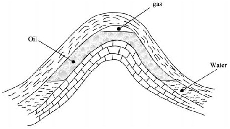

Definition and Formation: A petroleum reservoir is an accumulation of hydrocarbons within porous and permeable rock, typically found in sedimentary basins. The reservoir rock is overlain by impermeable layers (cap rock) that trap oil and gas, preventing their upward migration.
Key Elements of a Reservoir:
Types of Reservoirs (Geologic Classification):
Petroleum reservoirs exist in many different sizes and shapes of geologic structures. It is usually convenient to classify the reservoirs according to the conditions of their formation as follows:
1. Dome-Shaped and Anticline Reservoirs:
These are formed by folding of rock layers. Oil/gas migrates upward through porous strata and gets trapped beneath sealing cap rocks.
2. Faulted Reservoirs:
Formed by shearing and offsetting of strata. Movement creates seals where petroleum can accumulate.
3. Salt-Dome Reservoirs:
Formed by the upward movement of impermeable salt domes. Oil gets trapped between impermeable layers and the salt body.
4. Unconformities:
Created where impermeable rock overlays older beds, forming traps along erosional surfaces.
5. Lense-Type Reservoirs:
Sealed by surrounding nonporous rocks due to irregular sediment deposition.
6. Combination Reservoirs:
Involve combinations of folding, faulting, and abrupt porosity changes.
Reservoir Drive Mechanisms:
These mechanisms determine how oil is pushed from the reservoir to the surface.
I. Solution-Gas-Drive Reservoirs:
Rely on pressure reduction below bubble point, causing gas to evolve and push oil out. Least efficient; 15–25% recovery.
II. Gas-Cap-Drive Reservoirs:
Use expansion of gas caps to drive oil downward. Moderately efficient; 25–50% recovery.
III. Water-Drive Reservoirs:
Use underlying saltwater expansion to push oil. Most efficient; up to 50% recovery.
Fluid Distribution:
Reservoir Engineering:
Engineers analyze reservoir behavior and fluid properties to design strategies for maximizing oil recovery and economic return.